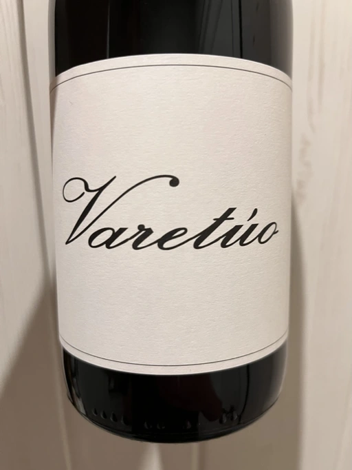

- Type
- Red Still, Dry
- Producer
- Barranco Oscuro
- Vintage
- 2019
- Location
- Spain, Vino de Mesa
- Grapes
- Tempranillo
- Alcohol
- 12.5
- Sugar
- NA
- Price
- 617 UAH
- Cellar
- N/A
The Varetúo is made with grapes produced by more than 3000 vines planted in 1996 in three different areas of the Barranco Oscuro estate at an altitude of 1280 meters in Cádiar, Granada. Short maceration with the whole bunch in a stainless steel tank, where fermentation begins spontaneously with indigenous yeast. It is aged for one year in European oak barrels in underground cellars. The malolactic takes place during the ageing period. Not clarified but filtered slightly to avoid heavy particles.
Ratings
2022-12-14 - 7.50
Funky yet pleasant. Compote made of strawberries and plums, black pepper and subtle notes of brine. It’s fizzy, so aerate if you dislike them bubbles. Delicious, well-balanced and fresh (partially thanks to VA). A bit short in the aftertaste. Sophisticated and quaffable at the same time.